Noheji
Noheji · Aomori
Noheji
Highlighted on the Aomori map.
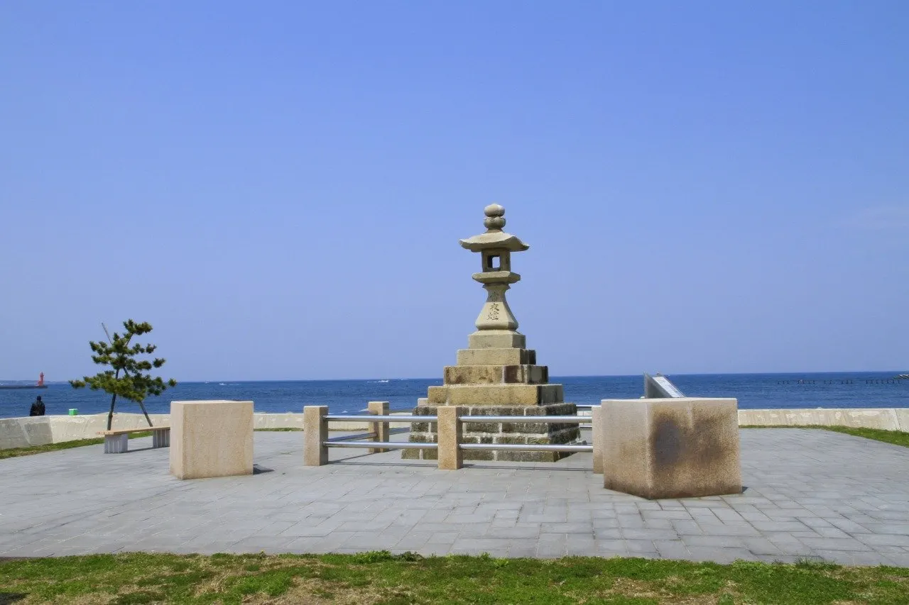
Stay
亀の井ホテル 青森まかど
Kame No I Hoteru Aomori Makado
Dining
ラーメン麺太
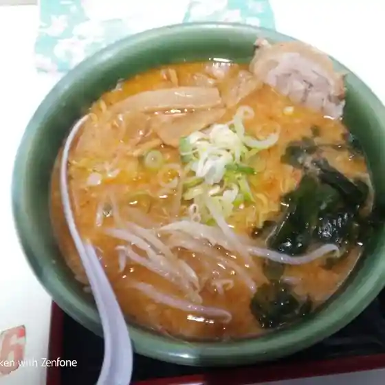
Raamen Men Ta
ラーメンハウスめんめん
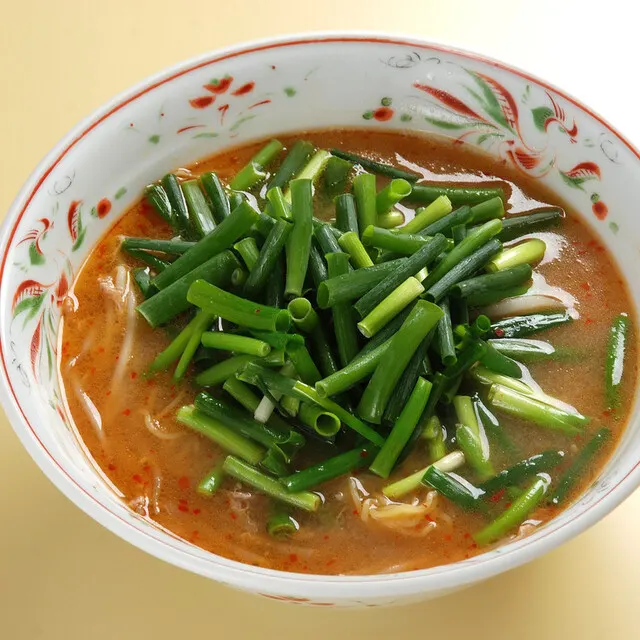
Raamenhausu Menmen
さかもと食堂
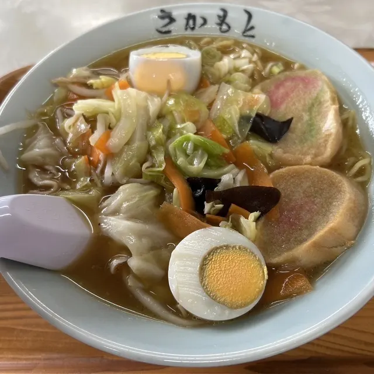
Sakamoto Shokudou
パステル
Pasuteru
大湊屋製菓 新町店
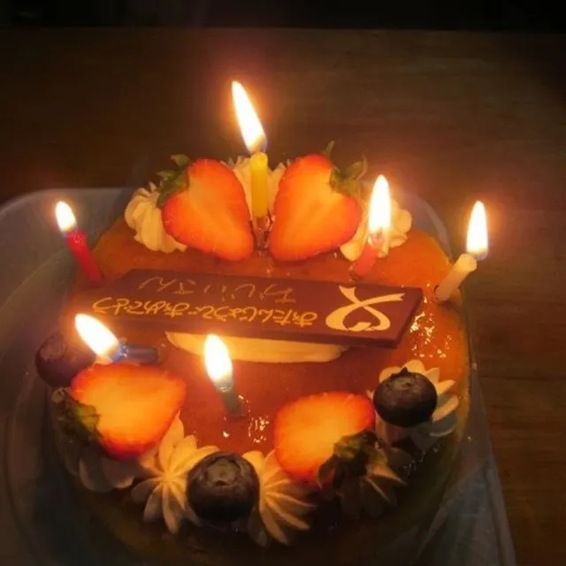
Oominato Ya Seika Shinmachi Mise
おおにし食事房
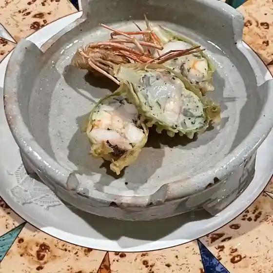
Oonishi Shokuji Bou
馬門温泉スキー場レストラン
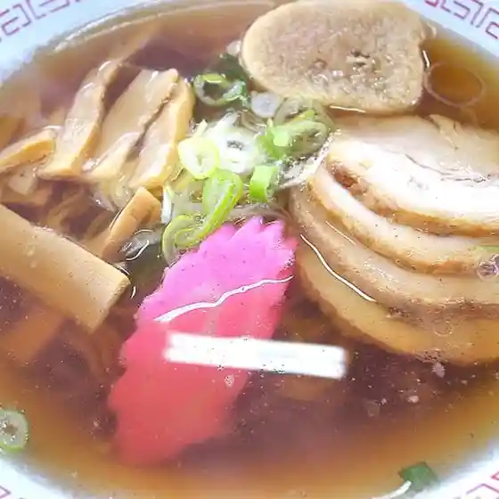
Makado Onsen Sukii Ba Resutoran
和食処しばのや
Washoku Shoshi Banoya
そば割烹 ながはま
Soba Kappou Nagahama
頑固らーめん やまじゅう
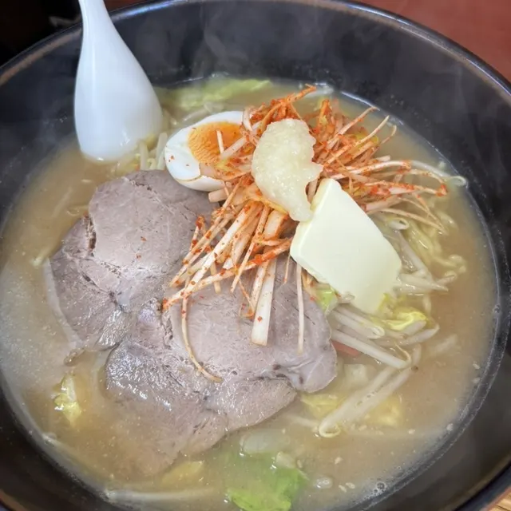
Ganko Raamen Yamajuu
佐藤製菓
Satou Seika
常夜燈市場
Jouyatou Shijou
洋風居酒屋おがわ
Youfuu Izakaya Ogawa
ガーデンカフェ
Gaadenkafe
花梨
Karin
パクパク
Pakupaku
のへじ駅前カフェ 北前茶屋
Noheji Ekimae Kafe Kitamae Chaya
マルサダ
Marusada
居酒屋ダイニング まる
Izakaya Dainingu Maru
紅とんぼ
Kurenai Tonbo
旅館コマイ
Ryokan Komai
ラグノオ マックスバリュ野辺地店
Ragunoo Makkusubaryu Noheji Mise
そば屋 さいとう
Soba Ya Saitou
サロン食堂
Saron Shokudou
Sights
Joyato Park
Park with a stone night lantern from 1827 that guided ships into Noheji Port.
Noheji Ikiiki Joyato Market
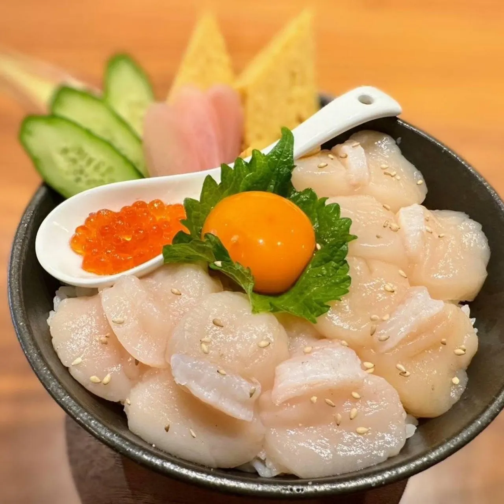
Market renovated in 2022 selling fresh Noheji scallops and fish.
Atago Park
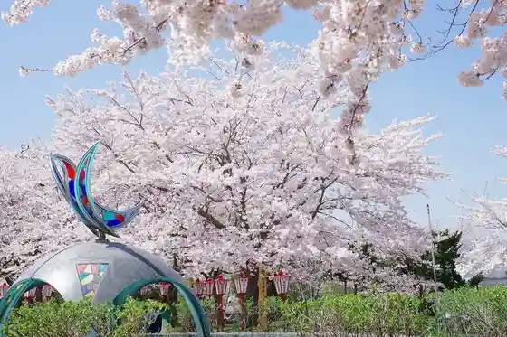
Hilltop park with about 700 cherry trees, one of Aomori's famous blossom spots.
Noheji Seaside Park (Tofugaura Beach)
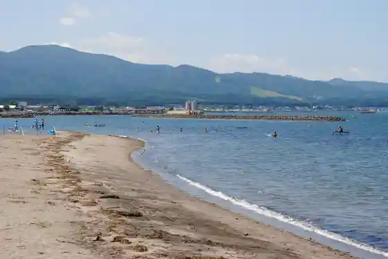
Calm, shallow swimming beach with a camping area in season.
Shibasaki Health and Recreation Facility
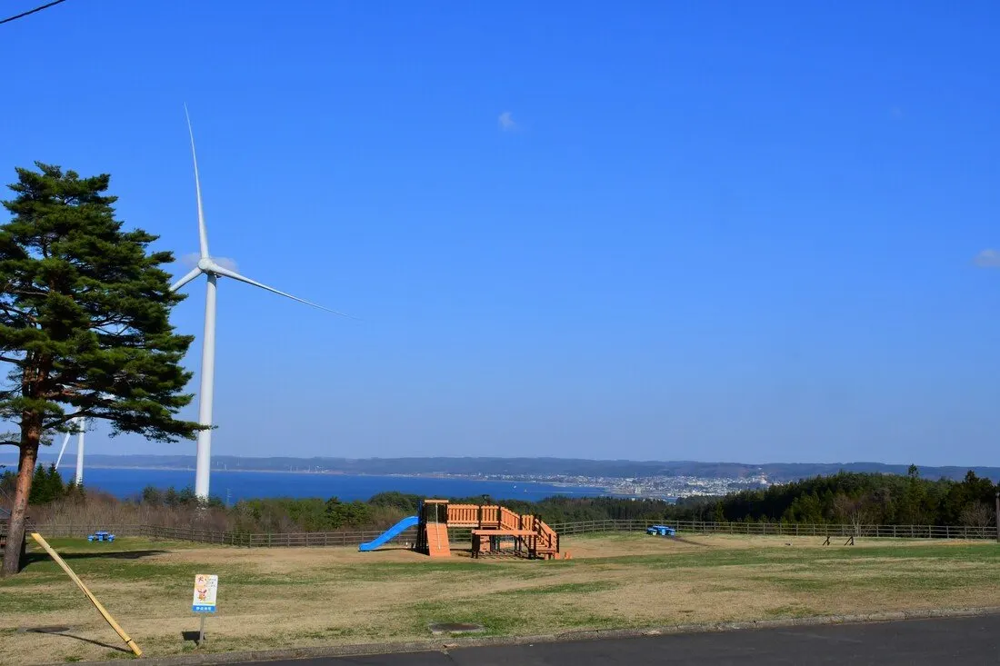
Hilltop outdoor facility above Mutsu Bay with camping, park golf and a dog run.
Noheji Tourism Association
Tourist information for Noheji, a former Morioka domain port town at the gateway to Shimokita.
Noheji History and Folklore Museum
Museum of local history from the Jomon era, including the Important Cultural Property clay figure "Jomon Kurara".
Makado Onsen Ski Area
Makado Onsen Ski Area is located on the northeastern slope in Noheji Town and is approximately a 10-minute car ride from JR Noheji Station.
Former Nomura Residence Annex (Anzaisho)
Annex built by a Noheji merchant and used by Emperor Meiji on his 1881 tour.